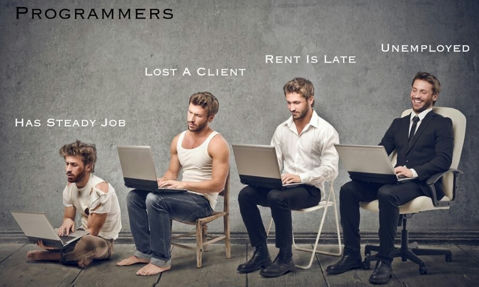

Näe välja nagu progeja, valda tehnikat nagu progeja, mõtle nagu progeja!
Programeerija (ladina k. Programmatarius) on tänapäeval levinud tõug. Tõenäoliselt oled mõnda kohanud tänaval, koolis, töö juures või enda pesas arvuti taga vaikselt nohistamas (pssst..parem mitte segada). Need müstilised elukad on modernse maailma nähtamatu taustajõud, kellest ei saa paraku üle ega ümber. Olemed loonud selle käsiraamatu, et saaksid neid ja nende salapäraseid viise paremini tundma õppida. Toome ühe progeja teieni kõige saba ja sarvedega, andes täieliku ülevaate olulistest punktidest.
Oled ise Progepets (sünonüüm programmeerijale, progejad tarvitavad) ja loed seda lõiku! Patsuta endale õlale, et oled nii kaugele jõudnud? Siiski julgustame sind edasi lugema, et saada kinnitust enda eluviiside õigsusele ja ehk tutvuda põhjalikumalt mõne uue nõksuga.
Sokid ja Sandaalid
Ehk esmamulje algab alati välimusest. Mida selga panna? Kui tihti pesus käia? Mida juuksurile öelda? Nagu arvata võib on detaile, mida tähele panna, palju. Ära kahtle, vaata parem ise järgi.. LOE LÄHEMALT 
Asendamatu elektroonika
Sarnaselt Ironmanile saab progeja enda erakordsed võimed teda ümbritsevast tehnoloogiast. Valmis tuleb olla igaks olukorraks ja täpne varustus (loe: relvastus) sõltub takistusest mida tuleb ületada. Mustkunstnik ei avalda kunagi enda trikke, aga meie avaldame progeja omadest vähemalt mõned..LOE LÄHEMALT

Kuplialune maastik
Mõistus on programmeerijal kahtlemata vahe ja langetatud otsused praktilised. Millised kriteeriumid tulevad aga mängu, kui tuleb suhelda teiste INIMESTEGA,kuidas domineerida konkurentsitihedal väljal liigikaaslaste üle? Kuidas programmeerija sügaval sisimas ennast tunneb? Meie eksperdid võtavad üksipulgi lahti programmeerija ajus funktsioneeriva Decision Tree..LOE LÄHEMALT